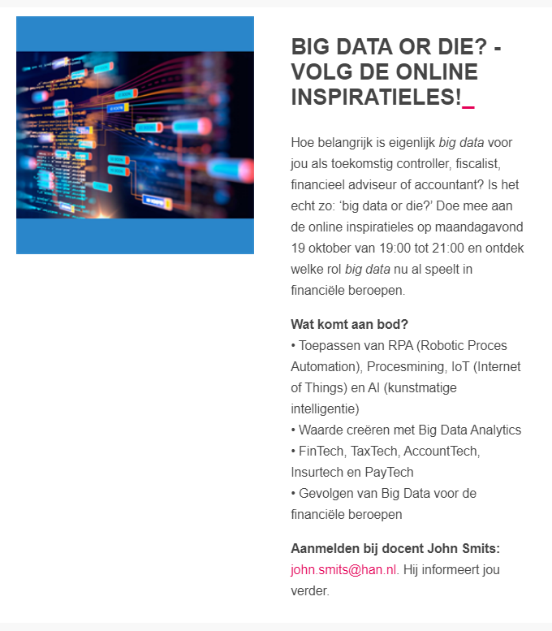
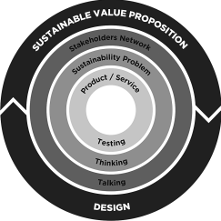

Voor mijn persoonlijke ontwikkeling vind ik het erg belangrijk om up-to-date te blijven over de onderwerpen die mij interesseren in mijn werkveld. In de nieuwsbrief van Finance and Control kwam deze inspiratieles voorbij en hier heb ik mij dus ook meteen voor aangemeld. Tijdens deze les werden een aantal dingen besproken, algemene introductie over RPA, AI & Iot. Ik wist hier al meer over dan ik had verwacht, voornamelijk informatie die ik tijdens de minor had opgedaan. Daarnaast heeft John (de docent die deze les gaf) mij wat meer handvaten gegeven over hoe ik nou de financial van de toekomst kan zijn. Er zijn van de HAN een aantal gratis cursussen die je kunt volgen over Robotics, BI & en andere interessante Fintech onderdelen. Een belangrijk thema tijdens deze les was: waarde toevoegen bij het gebruik van big data. Daarnaast ging het ook veel over beter communiceren met de klant. Gedrag en inzicht vertalen in nieuwe behoeften. Dit is een onderwerp wat mij erg aanspreekt en ik ben ook voor mijn afstudeerstage gerichter gaan zoeken naar stages in BI hoek. Ik weet dat deze les mij dus heeft geholpen bij mijn persoonlijke ontwikkeling. Ik heb me aangemeld voor een online cursus over data-analyse. Ik hoop hier in mijn verdere loopbaan veel aan te hebben. Daarnaast heb ik een interessante video gedeeld op het forum over blockchain. Deze Tedtalk is hieronder te bekijken.  